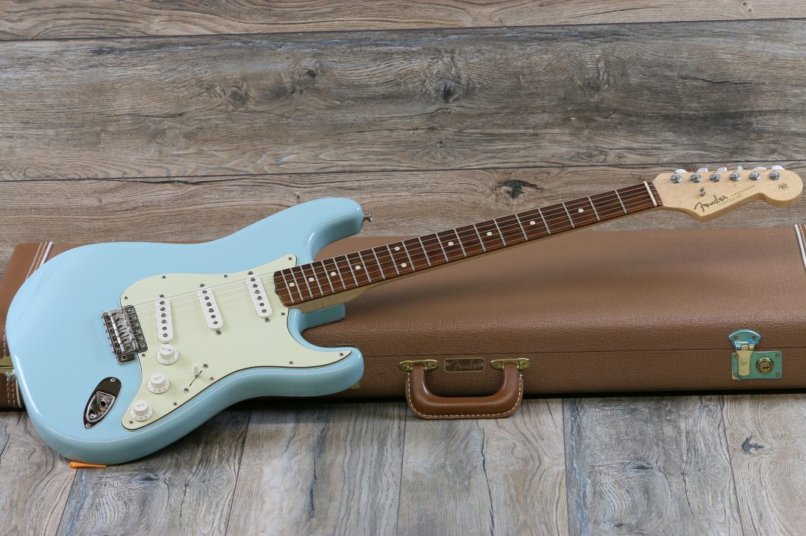
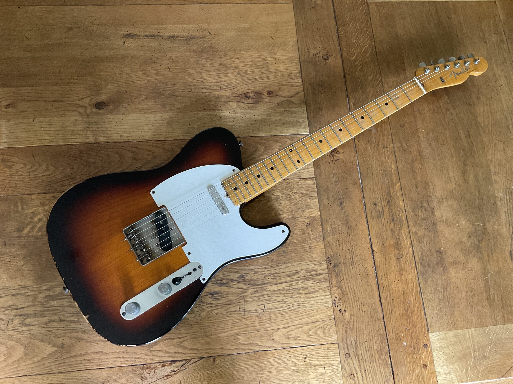
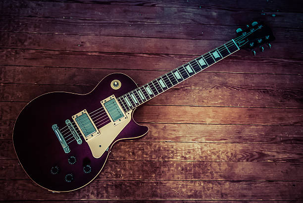
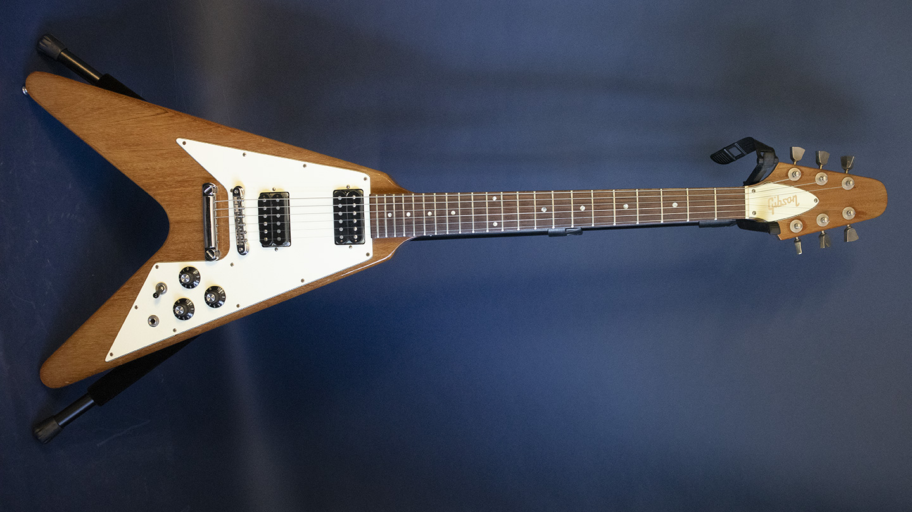

Tipi |
Esistono moltissimi tipi di chitarra elettrica, caratterizzati da toni e forme diverse,
i più conosciuti sono: |
|
|
La Stratocaster |
|
| Realizzata da Leo Fender nel 1954, è immediatamente diventata un'icona per tutti i musicisti tanto che continua ad essere sempre popolarissima.
La stratocaster introdusse all'epoca tutta una serie di importanti innovazioni, tra cui ricordiamo un aumentato numero di pick-up, la leva del vibrato e l'abbandono della forma tipica della chitarra tradizionale a favore di linee più ergonomiche, con la silhouette che ancora oggi è sinonimo indiscusso di chitarra elettrica.
Il tono ottenuto suonando una stratocaster è cristallino ed inimitabile. |
 |
La Telecaster |
|
| La Telecaster, prodotta nei primi anni 50, è subito riconoscibile per l'elegante forma del corpo single-cutaway, che consente di suonare comodamente
e di accedere facilmente ai tasti superiori.
Essa è caratterizzata da un grosso manico con sezione a "U", due pick-up single coil controllati da un selettore a 3 posizioni, un potenziometro di volume e un controllo del tono.
Il punto forte della telecaster è la sua versabilità:
può passare dai suoni di una steel guitar fino ai toni caldi di una chitarra blues, mantenendo tuttavia un suono proprio, riconoscibile, che la distingue in ogni situazione. Anche oggi la semplicità dello strumento lo fa prediligere a molti musicisti country, blues e rock. |
 |
La Les Paul |
|
| La Gibson Les Paul venne progettata nel 1952 ed è conosciuta per il suo design classico a corpo singolo ed un suono potente.
Il corpo delle Les Paul è solitamente in mogano, mentre il manico è in mogano o acero: questa combinazione contribuisce al tono caldo e robusto di questo tipo di chitarra.
Importante caratteristica delle Les Paul sono inoltre i pick-up hambucker, che diminuiscono il rumore indesiderato. La Les Paul si presta bene a una grande varietà di generi musicali, dal rock al blues e oltre. |
 |
La Flying V |
|
| La caratteristica più evidente della Flying V è la sua forma a "V": questo design unico è stato introdotto negli anni '50 e venne considerato futuristico, diventando un'icona nel mondo delle chitarre elettriche.
A causa della sua insolita forma, il manico della Flying V è spesso integrato nel corpo, contribuendo a una migliore accessibilità alle note più alte sulla tastiera.
Le Flying V sono conosciute per il loro tono forte, più denso e distorto e per la loro particolare leggerezza. |
 |
| → vai a: "Effetti" |